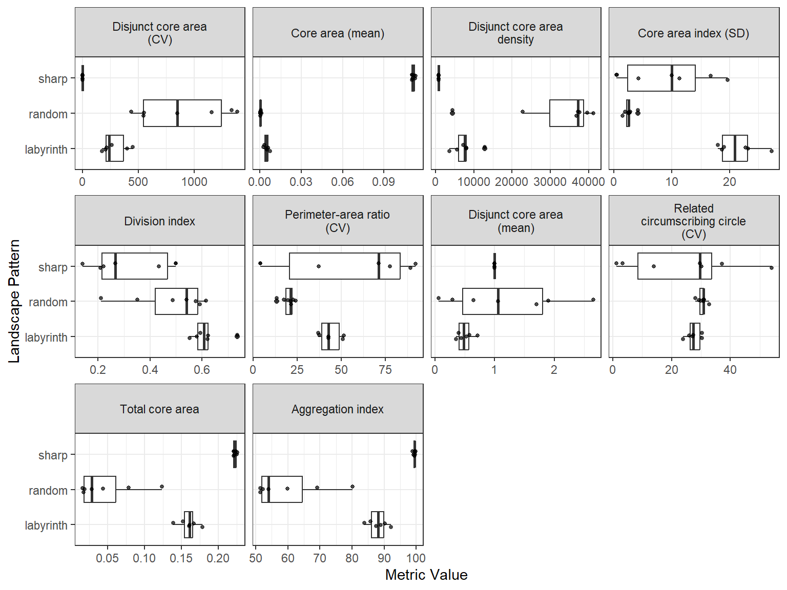

library(patternscaper)
set.seed(123456)
# Generate sample landscapes
sample_landscapes <- create_landscapes(
n = 20,
patterns = c("random", "sharp", "labyrinth"),
width = 50,
height = 50
)
#> ✔ Successfully generated all 20 training landscapesThis guide shows how to calculate landscape metrics from landscape objects, rank metrics by how well they distinguish known spatial patterns, and visualize their distributions.
Setup
Create a small set of labelled landscapes for the examples in this guide.
Calculate landscape metrics
calculate_metrics() uses the landscapemetrics package and calculates metrics at the landscape or class level:
- Landscape-level metrics summarize the complete landscape. They produce one value per landscape and metric.
- Class-level metrics summarize each land-cover class separately. They produce one value per landscape, metric, and land-cover class that is present.
Use landscape-level metrics to describe the complete landscape. Class-level metrics can help distinguish patterns that differ mainly in which land-cover class forms the pattern, such as spots and gaps.
Use landscapemetrics::list_lsm() to look up the available metric abbreviations, names, and types at either level:
# List available landscape-level metrics
landscapemetrics::list_lsm(level = "landscape") |>
dplyr::select(metric, name, type)
#> # A tibble: 66 x 3
#> metric name type
#> <chr> <chr> <chr>
#> 1 ai aggregation index aggregation metric
#> 2 area_cv patch area area and edge metric
#> 3 area_mn patch area area and edge metric
#> 4 area_sd patch area area and edge metric
#> 5 cai_cv core area index core area metric
#> 6 cai_mn core area index core area metric
#> 7 cai_sd core area index core area metric
#> 8 circle_cv related circumscribing circle shape metric
#> 9 circle_mn related circumscribing circle shape metric
#> 10 circle_sd related circumscribing circle shape metric
#> # i 56 more rowsBy default (metrics = NULL), calculate_metrics() calculates every available metric at the requested level:
# Calculate all landscape-level metrics
landscape_metrics <- calculate_metrics(
sample_landscapes,
level = "landscape"
)To calculate only specific metrics, you can pass their abbreviations to metrics. This works at either level.
# Calculate selected landscape-level metrics
landscape_specific_metrics <- calculate_metrics(
sample_landscapes,
level = "landscape",
metrics = c("ai", "area_cv", "cai_cv")
)In the resulting table, each row contains one metric result. The main columns identify the landscape, pattern, metric, calculated value, and any warning from landscapemetrics:
landscape_metrics |>
dplyr::select(
landscape_id,
landscape_name,
pattern,
metric,
value,
warnings
)
#> # A tibble: 1,320 x 6
#> landscape_id landscape_name pattern metric value warnings
#> <int> <chr> <chr> <chr> <dbl> <chr>
#> 1 1 sharp_1_rot60 sharp ai 99.5 <NA>
#> 2 2 sharp_2_rot313 sharp ai 98.9 <NA>
#> 3 3 labyrinth_3 labyrinth ai 87.5 <NA>
#> 4 4 sharp_4_rot61 sharp ai 99.7 <NA>
#> 5 5 labyrinth_5 labyrinth ai 90.2 <NA>
#> 6 6 random_6 random ai 54.0 <NA>
#> 7 7 random_7 random ai 69.2 <NA>
#> 8 8 labyrinth_8 labyrinth ai 92.1 <NA>
#> 9 9 random_9 random ai 59.8 <NA>
#> 10 10 random_10 random ai 51.5 <NA>
#> # i 1,310 more rowsIn class-level results below, the class column stores the land-cover code. metric_name contains the original metric abbreviation, while metric appends the class code to give each result a unique identifier:
# Calculate all class-level metrics
class_metrics <- calculate_metrics(
sample_landscapes,
level = "class"
)
class_metrics |>
dplyr::select(
landscape_id,
pattern,
class,
metric_name,
metric,
value
)
#> # A tibble: 2,179 x 6
#> landscape_id pattern class metric_name metric value
#> <int> <chr> <int> <chr> <chr> <dbl>
#> 1 1 sharp 0 ai ai_0 97.7
#> 2 1 sharp 1 ai ai_1 99.8
#> 3 2 sharp 0 ai ai_0 98.8
#> 4 2 sharp 1 ai ai_1 99.0
#> 5 3 labyrinth 0 ai ai_0 90.5
#> 6 3 labyrinth 1 ai ai_1 81.3
#> 7 4 sharp 0 ai ai_0 99.9
#> 8 4 sharp 1 ai ai_1 96.9
#> 9 5 labyrinth 0 ai ai_0 92.3
#> 10 5 labyrinth 1 ai ai_1 85.8
#> # i 2,169 more rowsIf a land-cover class is absent, its class-level metrics have no result row. These incomplete metrics cannot be used directly as model predictors because they do not provide one value per landscape.
Comparable landscape geometry
Many landscape metrics change with raster extent, resolution, or shape. Use comparable geometry where possible, or choose metrics that are robust to the differences in your data. Metric models warn about substantial differences in extent, resolution, or aspect ratio, but not about irregular shapes represented by missing cells. See Matching training and application data for details.
Find informative metrics
Use evaluate_metrics() to rank metrics by how well they distinguish labelled pattern classes in the supplied landscapes.
Three ranking methods are available:
-
kruskal_effsize(default) uses ranks and is robust to outliers. It does not describe the size of differences on the original metric scale. -
fisher_scorecompares between- and within-pattern variance. It assumes approximately normally distributed values within patterns and is sensitive to outliers. -
mean_groupscompares pattern means with the overall mean. It does not account for variation within patterns.
By default, evaluate_metrics() excludes incomplete and zero-variation metrics because they cannot be used in model training.
After ranking, metrics are selected in rank order. A metric is skipped when its absolute Pearson correlation with an already selected metric exceeds the correlation_threshold (default 0.7). Correlations are calculated across all landscapes and pattern classes. Setting correlation_threshold to 1 disables correlation filtering. If too few metrics pass the correlation filter, the highest-ranked correlated metrics are added to reach metrics_number. They are marked selected_correlation_fill and placed at the end of the selected metrics. Set fill_correlated = FALSE to return only uncorrelated metrics (which then may be fewer than requested).
The example below produces expected warnings about excluded metrics and correlated metrics being added. They explain how the selection changed; they do not indicate a failure.
# Evaluate metrics using the default Kruskal-Wallis effect-size method
metric_evaluation <- evaluate_metrics(
metrics = landscape_metrics,
method = "kruskal_effsize",
metrics_number = 10,
correlation_threshold = 0.7
)
#> Warning: Excluded 6 metrics with missing values (120 rows removed).
#> x NA value for at least one landscape: "enn_cv", "enn_mn", "enn_sd", "iji",
#> "pafrac", and "rpr"
#> i Use `exclude_incomplete_metrics = FALSE` to retain them (not recommended for
#> model training).
#> Warning: Excluded 3 metrics with no variation across landscapes: "pr", "prd",
#> and "ta"
#> Warning: Only 8 uncorrelated metrics found. Filling to 10 with correlated metrics.
#> i Added: "tca" and "ai"
metric_evaluation
#> Metrics evaluation: kruskal_effsize [66 candidate metrics]
#> -----------------------------------------
#> Selected (10): dcore_cv, core_mn, dcad, cai_sd, division, para_cv, dcore_mn, circle_cv, tca, ai
#>
#> Outcomes:
#> selected 8
#> selected_correlation_fill 2
#> dropped_correlated 47
#> excluded_incomplete 6
#> excluded_zero_variance 3
#>
#> Use $ranking for scores and per-metric outcomes.The selected metric names are stored in $selected.
metric_evaluation$selected
#> [1] "dcore_cv" "core_mn" "dcad" "cai_sd" "division" "para_cv"
#> [7] "dcore_mn" "circle_cv" "tca" "ai"The $ranking table contains the score and selection outcome for every input metric:
metric_evaluation$ranking
#> # A tibble: 66 x 7
#> metric name score rank selected outcome correlated_with
#> <chr> <chr> <dbl> <int> <lgl> <fct> <chr>
#> 1 dcore_cv Disjunct core area (C~ 0.909 1 TRUE select~ <NA>
#> 2 core_mn Core area (mean) 0.890 2 TRUE select~ <NA>
#> 3 tca Total core area 0.890 3 TRUE select~ dcore_cv, core~
#> 4 ai Aggregation index 0.889 4 TRUE select~ core_mn
#> 5 cai_cv Core area index (CV) 0.889 5 FALSE droppe~ dcore_cv
#> 6 cai_mn Core area index (mean) 0.889 6 FALSE droppe~ dcore_cv, core~
#> 7 contig_mn Contiguity index (mea~ 0.889 7 FALSE droppe~ dcore_cv, core~
#> 8 contig_sd Contiguity index (SD) 0.889 8 FALSE droppe~ core_mn
#> 9 ed Edge density 0.889 9 FALSE droppe~ core_mn
#> 10 lsi Landscape shape index 0.889 10 FALSE droppe~ core_mn
#> # i 56 more rowsThe name column gives the full metric name including class information for class-level metrics.
The outcome column records whether a metric was selected, removed by the correlation filter, or excluded before ranking. Excluded metrics have no score or rank:
dplyr::count(metric_evaluation$ranking, outcome)
#> # A tibble: 5 x 2
#> outcome n
#> <fct> <int>
#> 1 selected 8
#> 2 selected_correlation_fill 2
#> 3 dropped_correlated 47
#> 4 excluded_incomplete 6
#> 5 excluded_zero_variance 3You can check which metrics were removed by the correlation filter and what they were correlated with:
metric_evaluation$ranking |>
dplyr::filter(outcome == "dropped_correlated") |>
dplyr::select(metric, score, correlated_with)
#> # A tibble: 47 x 3
#> metric score correlated_with
#> <chr> <dbl> <chr>
#> 1 cai_cv 0.889 dcore_cv
#> 2 cai_mn 0.889 dcore_cv, core_mn
#> 3 contig_mn 0.889 dcore_cv, core_mn
#> 4 contig_sd 0.889 core_mn
#> 5 ed 0.889 core_mn
#> 6 lsi 0.889 core_mn
#> 7 para_mn 0.889 dcore_cv, core_mn
#> 8 para_sd 0.889 core_mn
#> 9 pladj 0.889 core_mn
#> 10 relmutinf 0.889 dcore_cv, core_mn
#> # i 37 more rowsVisualize metric distributions
Use plot_metrics() to compare the ten selected metrics. Panel labels use metric abbreviations by default. Set metric_labels = "name" to show full names from landscapemetrics::list_lsm(). jitter_seed fixes the jittered point positions so the figure is reproduced exactly:
plot_metrics(
landscape_metrics,
selected_metrics = metric_evaluation,
metric_labels = "name",
jitter_seed = 42
)
Long names wrap automatically. Set label_wrap_width if the labels look too wide or too narrow for the figure size:
plot_metrics(
landscape_metrics,
selected_metrics = metric_evaluation,
metric_labels = "name",
label_wrap_width = 15
)Next steps
Continue with Classify landscapes with landscape metrics to train and evaluate a classifier and apply it to new landscapes.